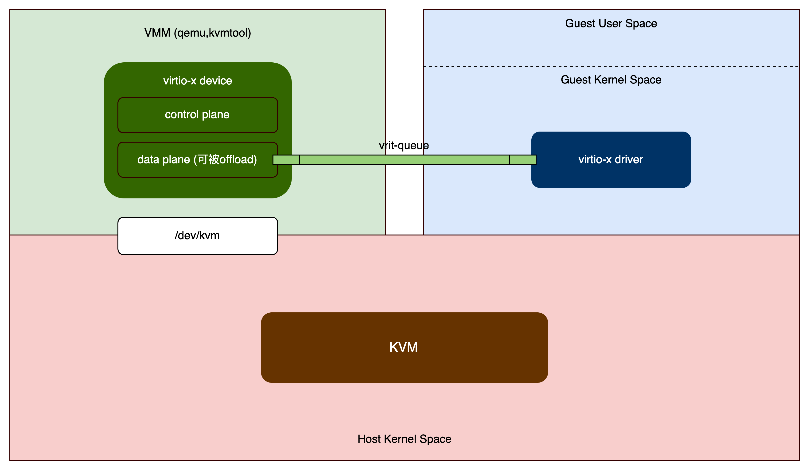
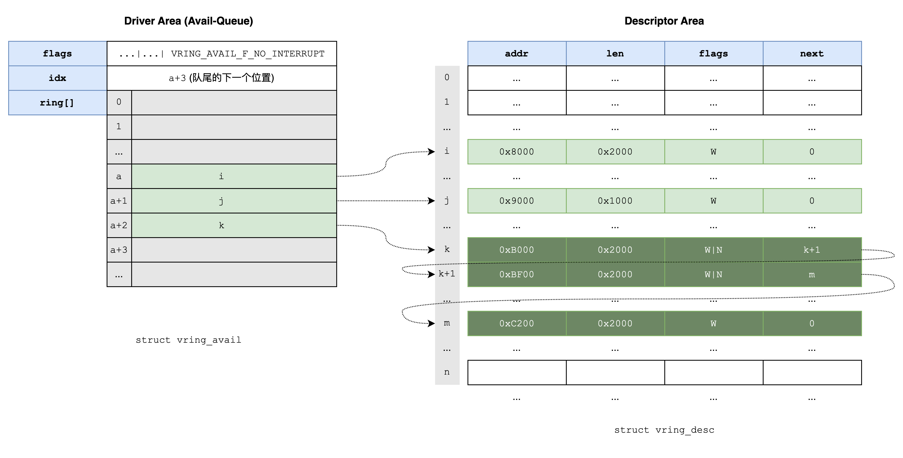
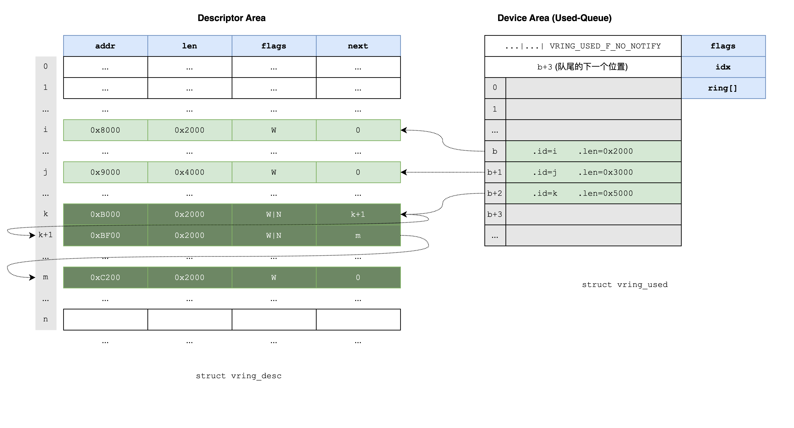
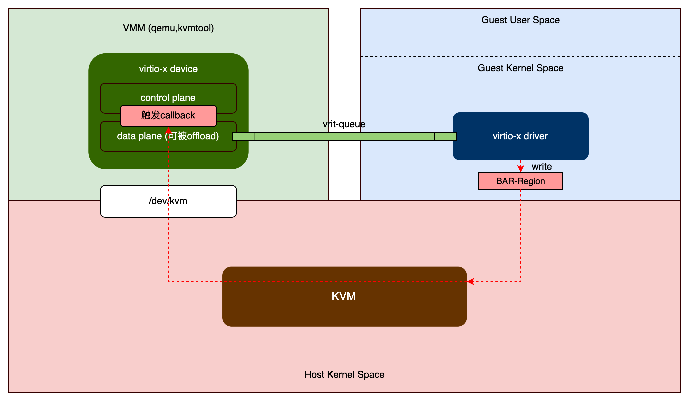
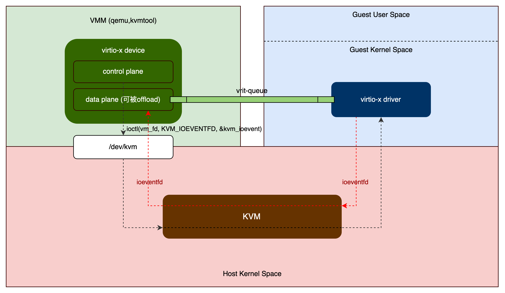

本文介绍kvmtool中对virtio的实现。前文interrupt virtualization留下一个问题，启用virtio device的queue到底做了什么事，本文一并回答。
virtio的组件 (1)
在本文中，不打算从virtio specification出发去介绍virtio，而是直接从kvmtool的代码出发，结合virtio-blk以及virtio-scsi，看virtio是如何工作的。当然，我也会尽可能去概括virtio设备的一般特征。
Virtio包括两个组件：guest中的driver和host中的device。VMM(kvmtool,qemu)将virtio device暴露给guest的transport有多种(如PCI, Memory Mapping I/O, S/390 Channel I/O)，PCI是最常见的选择，所以本文特指PCI transport实现的virtio。
对于guest来讲，virtio设备就像真PCI设备一样：Real PCI hardware exposes its configuration space using a specific physical memory address range (i.e., the driver can read or write the device’s registers by accessing that memory range) and/or special processor instructions. In the VM world, the VMM (kvmtool,qemu) captures accesses to that memory range and performs device emulation, exposing the same memory layout that a real PCI device would have and offering the same responses. The virtio specification also defines the layout of its PCI Configuration space, so implementing it is straightforward. 参考pci virtualization.
When the guest boots and uses the PCI/PCIe auto discovering mechanism, the virtio devices identify themselves wit the PCI vendor ID and their PCI Device ID (在PCI设备enumeration时，虚拟设备返回虚拟的vendorID和deviceID). The guest’s kernel uses these identifiers to know which driver must handle the device。
也就是，通过PCI vendorID和deviceID找driver(这和物理设备一样)，只不过vendorID和deviceID是虚拟出来的。我观察到的所有virtio device的vendorID都是0x1af4 (Red Hat, Inc.)；deviceID 0x1003是virtio console, 0x1001是SCSI storage controller等等，可以在pcilookup网站上查询。
因为有各种类型的virtio设备(blk, net, …)，所以本文把guest中的driver记作virtio-x driver，把host中的device记作virtio-x device。另外，为了衔接vhost和qemu，这里也把virtio-x device分成control plane和data plane两个部分————其实在kvmtool的实现中这个两部分没有明显的模块化。Control plane指virtio设备的初始化和配置等管理功能，让guest感觉到那里有一个设备。Data plane是设备的数据处理功能，例如virtio-blk设备能够存取数据，virtio-net设备能够收发数据包，让guest真的能使用那个设备的功能。Control plane都是在VMM(kvmtool,qemu)中，而为了提升性能，data plane常被offload到host的内核(vhost)或者host的用户态进程(vhost-user)。这也是我们把virtio-x device强行分成两部分的原因。

vring (2)
在interrupt virtualization中经常看到queue。现代PCI设备都是多queue的，每个queue有独立的中断；这样就可以让多个CPU来处理中断，实现性能提升。到虚拟化领域，virtio设备也有多个queue，叫virt-queue。每个virt-queue也有独立的中断。
当然，queue/virt-queue的作用是数据传输。就virt-queue而言，数据传输是vring完成。在很多文章中，virt-queue和vring经常混用，搞不清它们的关系。在kvmtool中可以明确的看到：一个virtio设备有多个virt-queue；每个virt-queue有一个vring；
1 | struct scsi_dev { |
Vring传输数据的方式是共享内存(见下一节)。它在两个方向传输数据：
- virtio-x driver向virtio-x device发送available-buffer;
- virtio-x device向virtio-x driver发送used-buffer;
为了高效地完成这个任务，vring设计上分为3个区：Descriptor-Area, Driver-Area (avail-queue), Device-Area (used-queue). Descriptor-Area描述一些内存buffer，逻辑上没有顺序；Driver-Area是virtio-x driver维护的，它通过引用的方式，把Descriptor-Area内的一些buffer组织成queue，也就是available-buffer queue，传递给virtio-x device。类似地，Device-Area是virtio-x device维护的，通过引用的方式，把Descriptor-Area内的一些buffer组织成queue，也就是used-buffer queue，传递给virtio-x driver。这篇文章细讲了数据如何传输。这里仅通过2张图说明。
注意available/used这对用词，它的选取视角是guest作producer，device作consumer。对于output操作比如符合直觉：available-buffer中存着待输出的数据，输出到device之后，就变成used/consumed；对于input操作有点反直觉：available-buffer是空的，写入数据之后变成used/consumed。
A buffer can be read-only or write-only from the device point of view, but never both.

说明：
- Driver Area是virtio-x driver传递给virtio-x device的available buffer queue；
- flags的最低位告诉virtio device消费完buffer之后，要不要interrupt guest；不是强制的，只是一个优化；
- [k, k+1, m]是一个chained buffer，在available ring中只记它的head；
- idx：队尾的下一个位置。其实就是用来标记队尾。队头就是
struct virt_queue中的last_avail_idx。有了队头和队尾，自然可以判断队列是否位空、并从队列中取出元素。

说明：
- Device Area是virtio-x device传递给virtio-x driver的used buffer queue；
- 对于写操作，一个buffer可能被部分消费(short write)；如图中的buffer j和k；
- flags的最低位告诉guest的driver，要不要notify设备；不是强制的，只是一个优化；
- [k, k+1, m] 是一个chained buffer，在used ring中也只记它的head；
- 设备不修改descriptor area；
- idx；队尾的下一个位置。其实就是用来标记队尾。
vring的内存共享 (3)
前面说过，vring传递数据的方式是共享内存(高效)。内存是virtio-x driver在guest的内核里分配的，VMM(qemu,kvmtool)能够访问的到，因为guest的内存在VMM进程的内存空间里。所以：
- 若virtio-x device整个是在VMM中模拟的，则可以直接访问(地址的translation还是必要的，从little-endian转换成host的cpu-endian；little-endian是virtio协议定义的吗？)；
- 若virtio-x device的data plane被offload，则需要地址映射：like POSIX shared memory; a file descriptor to that memory is shared through vhost protocol；
无论如何，VMM(qemu,kvmtool)需要拿到内存的地址(若offload，VMM再把地址共享给data plane，待确认)。Virtio的common capability可以实现这一点，interrupt virtualization的第4.3.3节提到guest发送被选择的common-queue的vring的地址给device，就是这个实现。
Kvmtool方面：实现了common capability，即在configuration space中填写了virtio common capability的相关配置(见virtio/pci-modern.c:virtio_pci_modern_init函数)。
1 | int virtio_pci_modern_init(struct virtio_device *vdev) |
Guest方面：从device的configuration space读到这个配置，知道device启用了virtio common capability，就写对应的BAR-region (偏移VPCI_CFG_COMMON_START处)，传递过来vring的各个area的地址。
在kvmtool中，BAR-0和BAR-1的region都支持这个操作，它们注册的callback都是virtio_pci_modern__io_mmio_callback，只是io-port map和memory map的不同。
1 | void virtio_pci_modern__io_mmio_callback(struct kvm_cpu *vcpu, u64 addr, |
代码中desc_hi/desc_lo，avail_hi/avail_lo，used_hi/used_lo分别是Descriptor-Area，Driver-Area和Device-Area的地址(高32位和低32位)。
通知机制 (4)
在第2节看到vring在两个方向上传输数据；与之对应，需要两个方向上的通知。The virtio specification defines bi-directional notifications:
- available-buffer notification: the virtio-x driver notifies the virtio-x device that there are buffers in the vring that are ready to be processed;
- used-buffer notification: the virtio-x device signals the virtio-x driver that it has finished processing some buffers;
In the PCI case, the guest sends the available-buffer notification by writing to a specific memory address, and the device uses a vCPU interrupt to send the used buffer notification.
注：引入vhost之后，data plane主动poll vring，不需要available-buffer notification。而guest中的virtio-x driver，若是内核态的，应该还依赖used-buffer notification；若guest中采用用户态driver(如SPDK的用户态nvme driver)，就不依赖了。
名词约定：在kvmtool的代码中，available-buffer notification用的是notify一词；而used-buffer notification用的是signal一词(即interrupt)。
Available-buffer notification (4.1)
The guest (virtio-x driver) sends the available buffer notification by writing to a specific memory address. 这是virtio的notify capability(和前面的common capability并列)，启用过程在virtio/pci-modern.c:virtio_pci_modern_init中:
1 | int virtio_pci_modern_init(struct virtio_device *vdev) |
Guest从device的configuration space读到这个配置，知道device启用了notify capability，就写对应的BAR-region (偏移VPCI_CFG_NOTIFY_START处)，实现通知功能。在kvmtool中，BAR-0和BAR-1的region都支持这个操作，它们注册的callback都是virtio_pci_modern__io_mmio_callback，只是io-port map和memory map的不同。
同步通知 (4.1.1)
Virtio-x driver通过写BAR-region-0或者BAR-region-1(偏移VPCI_CFG_NOTIFY_START)通知device有available buffer可以处理。这时就触发kvmtool的virtio_pci_modern__io_mmio_callback函数，VM阻塞，所以通知是同步的。
1 | void virtio_pci_modern__io_mmio_callback(struct kvm_cpu *vcpu, u64 addr, |
通知消息中只包含virt queue number；因为buffer在vring中，这里只要告诉device vring里有数据就行了。

异步通知 (4.1.2)
Virtio-x driver把通知写到ioeventfd中，然后继续工作。通知消息可以缓存在ioeventfd中；virtio-x device异步地poll ioeventfd (注意和vhost poll vring不同)，批量地处理(batch)。
异步有更高的优先级，假如启用的话，同步方式就接收不到消息(我在kvmtool上实验过)。如何启用呢？这刚好填了前一篇interrupt virtualization中第4.3.3节留下的坑：启用被选择的common-queue。Guest选择一个common-queue，配置中断，共享vring地址(前面第3节)之后就启用它，触发如下callback：
1 | static bool virtio_pci__common_write(struct virtio_device *vdev, |
我们只看启用virtio_pci_init_vq：启用queue的主要任务是vdev->ops->init_vq，让device处理vring上的buffer。重点是virtio_pci__init_ioeventfd，它的任务是启用异步通知机制。如注释中所述，把它删掉也不影响功能，只是会使用同步通知方式而已。
1 | int virtio_pci_init_vq(struct kvm *kvm, struct virtio_device *vdev, int vq) |
函数virtio_pci__init_ioeventfd主要做的事情是：
- 创建一个eventfd实例，叫做ioeventfd；
- 构造一个
struct kvm_ioeventfd实例kvm_ioevent: {.addr=BAR-region起始地址+VIRTIO_PCI_QUEUE_NOTIFY; .fd=ioeventfd;} - 通过
ioctl(vm_fd, KVM_IOEVENTFD, &kvm_ioevent)，告诉kvm内核模块；
就是告诉内kvm模块：本该通过写BAR-region(偏移地址+VIRTIO_PCI_QUEUE_NOTIFY)发送的通知(第4.1.1节的方式)，现在通过ioeventfd发(可以被缓存，然后批量地处理)。看！它们的地址是相同的：BAR-region起始地址+VIRTIO_PCI_QUEUE_NOTIFY！
另外，在kvmtool中BAR-0和BAR-1的功能是相同的(只是一个io-port map另一个memory map)，所以上述过程对BAR-0和BAR-1分别执行一遍。

注意：异步通知可以实现批处理，性能应该比同步通知更高；虽然它也是通过poll实现的，但和vhost poll vring不同，后者不需要通知，更高效。
Used-buffer notification (4.2)
The virtio-x device uses a vCPU interrupt to send the used buffer notification.
前一章interrupt virtualization已经说到，要给guest发中断需要请求kvm内核模块来完成：
- 对于irqchip方式：
1 | ioctl(kvm->vm_fd, KVM_IRQ_LINE, {.irq=gsi}); |
- 对于msi方式:
1 | ioctl(kvm->vm_fd, KVM_SIGNAL_MSI, {.address_lo=addr_lo .address_hi=addr_hi, .data=data}); |
以virtio-blk为例，在处理完请求之后，发起中断。
1 | static void virtio_blk_do_io(struct kvm *kvm, struct virt_queue *vq, struct blk_dev *bdev) |
The virtio specification also allows the notifications to be enabled or disabled dynamically. That way, devices and drivers can batch buffer notifications (异步通知) or even actively poll for new buffers in virtqueues (busy polling, vhost). This approach is better suited for high traffic rates.
也就是说，两端都能够使用polling模式：
- virtio-x driver端：guest里不使用内核态virtio-x driver，而是使用用户态driver，例如SPDK的用户态nvme driver；
- virtio-x device端：vhost；注意vhost poll vring和poll ioeventfd不同；
低效问题 (5)
从前面图1,4,5可见，data plane在VMM(kvmtool,qemu)中，即用户态进程中，这带来一些效率问题：
- virtio-x driver发完available-buffer notification，vCPU停止运行，转到VMM(kvmtool,qemu)用户态进程(异步通知模式应该不会)。这有个内核态到用户态的context switch；
- 通常情况下，VMM(virtio-x device)还是要借助host kernel的能力来处理数据，这就有用户态到内核态的数据拷贝。例如，VMM中的虚拟网卡要把数据拷贝到host内核态的tap；VMM中的blk要把数据拷贝到内核态驱动。
- VMM(virtio-x device)给virtio-x driver发中断，要使用ioctl，它是一个系统调用，所以有用户态到内核态再返回用户态的context switch；
- 因为vCPU停止运行了，还需要一个系统调用来resume vCPU，也是有用户态到内核态再返回用户态的context switch；
这所有的低效都因为data plane在VMM中。假如data plane在host的内核中，那么context switch就没有了，并且也不存在用户态到内核态的数据拷贝问题：通过一些内存映射，vring中的buffer可以直接共享给内核里的data plane。这就是vhost的内容。
小结 (6)
结合kvmtool中virtio-blk的实现，粗略学习virtio机制。其中的重点是virt-queue和两个方向上的通知(notify和interrupt)。